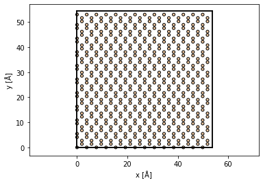

Plasmons
%config InlineBackend.rc = {"figure.dpi": 72, "figure.figsize": (6.0, 4.0)}
%matplotlib inline
import itertools
import abtem
import ase
import matplotlib.pyplot as plt
import numpy as np
from abtem.inelastic.plasmons import MonteCarloPlasmons
abtem.config.set({"device": "gpu"})
<dask.config.set at 0x1dbf9e814c0>
Plasmons#
atoms = ase.build.bulk("Si", cubic=True)
atoms = ase.build.surface(atoms, indices=(1, 1, 0), layers=3, periodic=True)
atoms = abtem.orthogonalize_cell(atoms)
atoms *= (7, 10, 10)
abtem.show_atoms(atoms, plane="xy", scale=0.5);
from ase.io import write
write("C:\\Users\\jacob\\Desktop\\silicon.xyz", atoms)

atoms.cell
Cell([53.75425750580134, 54.3, 115.1876946552886])
Cs = 1e-3 * 1e10
defocus = 600
probe = abtem.Probe(
energy=200e3,
gpts=(512, 512),
semiangle_cutoff=3.9,
taper=0.0,
Cs=Cs,
defocus=defocus,
)
frozen_phonons = abtem.FrozenPhonons(atoms, sigmas=0.078, num_configs=10)
potential = abtem.Potential(frozen_phonons, slice_thickness=1.9)
detectors = abtem.PixelatedDetector(max_angle=120)
no_loss = probe.multislice(
potential, detectors=detectors
).compute() # .diffraction_patterns(max_angle=20).mean(0).compute()
[########################################] | 100% Completed | 55.74 ss
no_loss.sum()
0.8835587
no_loss.crop(50).show(
explode=True,
image_grid_kwargs={"axes_pad": 0.05},
figsize=(16, 5),
units="mrad",
power=0.01,
)
(<Figure size 1152x360 with 2 Axes>,
<Axes: xlabel='scattering angle x [mrad]', ylabel='scattering angle y [mrad]'>)
from abtem.multislice import FresnelPropagator
plasmons = MonteCarloPlasmons(
mean_free_path=1050,
excitation_energy=17,
critical_angle=27.6,
num_samples=50,
num_excitations=[3],
seed=None,
)
probe_loss = probe.copy()
events = plasmons.draw_events(probe_loss, potential)
# planewave.grid.match(potential)
probe_loss = probe_loss.insert_transform(events)
loss = probe_loss.multislice(potential, detectors=detectors).compute()
# loss.array
[########################################] | 100% Completed | 81.16 ss
loss.axes_metadata[0].values
(((144.34482781318357, 373.5889244081527, 532.7068236766952),
(1.0456828359480992, 2.4700307563889026, 0.040263400921284435),
(5.977185751817904, 5.279418549904546, 5.375750485320423),
0),
((319.96349918265867, 450.13950129332284, 514.3975623851958),
(14.994757770632937, 2.197695809466098, 15.583446172403562),
(2.226910166606137, 5.93959281142384, 6.007111315497473),
0),
((143.50004580362364, 219.38681382436903, 219.83278516738656),
(0.05862307834497642, 6.280391047371984, 0.37147425746422935),
(1.8722935537467102, 3.939803907718991, 2.508490677304538),
0),
((208.47739828162588, 281.68780118982204, 458.047152244743),
(7.953630271836831, 8.304890442879518, 0.0679487694651775),
(1.165429499685304, 2.9739148623049103, 3.612879581860878),
0),
((55.375750345057945, 325.75470187186124, 420.0369353046835),
(0.07826373539232391, 0.359818403178733, 2.5923550617918725),
(6.171155406426904, 1.5550096371457744, 3.68447057275994),
0),
((11.914167345916287, 134.9218114073274, 488.37999961580886),
(0.03240792552769462, 14.213235530428197, 0.08047023855929793),
(1.6484759929151696, 1.4485807835826736, 1.3898284527003577),
0),
((150.12500615595792, 162.57228441711771, 383.5786312955323),
(8.439816125292829, 2.0061676414409284, 1.706453808743524),
(0.696464731424967, 1.9581148448936891, 0.9649251659070788),
0),
((44.69575254519099, 152.6541725468109, 226.19154580258947),
(0.5115246425098958, 0.3894018231762597, 1.559205205296231),
(5.233633072167866, 1.655418696188781, 5.909279713106078),
0),
((54.674921586508404, 412.22841924529996, 574.1513619366024),
(1.995914485214577, 0.2778261163245049, 6.4590302392631775),
(1.811504504577124, 6.273391324689142, 2.048173526096351),
0),
((168.59085977197034, 285.96039876442404, 366.8796992445901),
(0.26283894924877765, 0.10889034864305172, 0.1829932260784946),
(5.744664234046983, 4.773404175978831, 4.000018388199641),
0),
((310.91891657502055, 416.42848269303545, 494.8665052560946),
(1.0487673620296314, 17.812534752065933, 2.6380907842253123),
(1.9178502842521157, 5.9783540366847605, 0.9653318922350516),
0),
((95.57450392132627, 125.25580464125893, 381.4190358609676),
(1.2545949887638048, 7.99584538154571, 1.492323144168898),
(0.8642908915827909, 5.6783868075148325, 0.845954353439971),
0),
((41.24374175296596, 146.96740379180562, 168.60209293678452),
(0.674496839203104, 11.965856783004185, 3.4098462927869804),
(4.836575382536779, 1.338569570083946, 3.526545425119255),
0),
((201.45774236137464, 463.0332883516422, 527.9058478986426),
(0.23789296449566233, 0.3339104036790662, 0.05120219460933526),
(2.03883621511798, 3.203801495108647, 3.635933460193856),
0),
((293.3644557841992, 345.08027181852674, 534.189499107682),
(19.197644343892875, 2.10631475342236, 7.611823397356119),
(2.5518993843589755, 4.047085005598304, 4.135364858088623),
0),
((219.26422537485058, 524.4506714434424, 546.4898094651712),
(0.10751258307659367, 11.494029169064207, 2.474411838426326),
(3.061170656307142, 2.0685573066803, 4.6811703972564915),
0),
((92.4440691548153, 135.65764774571142, 536.8286995840929),
(5.9092904210464745, 4.087663819542669, 0.2827838863608872),
(2.994409969518617, 1.2920337963735073, 4.725210273008616),
0),
((80.28728283919753, 243.36243869519902, 568.9743312718317),
(0.448552570398028, 0.2480336121990461, 0.24507684221193213),
(1.5395731876906107, 1.4622003815566922, 1.8327819148800155),
0),
((118.15777140113987, 384.64178190143735, 415.45956168045035),
(14.142950207741341, 3.360982418619603, 0.6199348060790891),
(0.732371711646616, 1.6709675955444392, 6.060902704138957),
0),
((376.11151724964765, 468.59442339665384, 563.7145135408264),
(0.7732560561554783, 2.813071610395841, 5.163451366325249),
(0.9832125060356939, 3.443563845407162, 1.6566521993916028),
0),
((142.8877021399681, 412.54998401994186, 498.27463611465447),
(5.27669364716615, 5.317823131269359, 3.3822631523034072),
(2.558425886833791, 2.9178425279008917, 2.1749200810260305),
0),
((27.566999123864928, 261.86531457946677, 339.3408679328827),
(9.990202707082824, 0.011704790877958596, 0.5637442262441271),
(5.84297729493224, 5.695814433178939, 4.889806031053034),
0),
((258.98212893820465, 320.23225857543844, 392.3173450596706),
(0.016658784676829196, 0.04148972342409474, 21.669233278692058),
(3.581650799815151, 2.8870887394237665, 5.58634057429117),
0),
((187.0169376265764, 194.2516947687149, 344.4849976893944),
(5.25302729305524, 18.3496920307115, 0.17045736747928297),
(1.7337265358052176, 2.5977477787312004, 2.3118458288039188),
0),
((170.7629569062742, 286.4531780714234, 399.1385746173807),
(4.66068427401968, 5.178141656611442, 5.067767864153846),
(3.017932313226223, 0.15206722714207926, 1.4003070794193175),
0),
((173.4797009649828, 554.3633715168204, 562.349865539522),
(0.27846065988656776, 8.136467682907513, 0.3178043432906844),
(0.5482602838200534, 1.4396647635531035, 3.4813078210566193),
0),
((77.00121691657495, 146.08398094321706, 443.94827900412116),
(1.581150800287739, 0.2659391573989828, 12.306615642249144),
(1.5062429486477984, 1.4828178925969735, 0.8171242933214975),
0),
((125.42385143327887, 149.39773751696956, 213.33549366667654),
(12.591153073633679, 1.8706582649552155, 1.2735562720446627),
(3.7853797514236085, 1.4415364083602829, 6.018492401649544),
0),
((36.08372933141151, 284.09309020110936, 370.3881570695778),
(0.10335210672317281, 4.8265488039194295, 1.7723262750648472),
(1.916683748070118, 0.46248497893728263, 0.4790783000864401),
0),
((102.82775402372954, 337.89613566659835, 537.118302802472),
(2.128423978011667, 0.12957033272327062, 0.21581158222333316),
(4.3474726110360224, 2.998923480961733, 5.226109768057053),
0),
((178.19040279959793, 186.09030385726334, 352.98414857180035),
(0.3523626513227303, 9.474580346009732, 3.7397941265100876),
(5.167270501767951, 0.9498362743384345, 6.096008187934382),
0),
((276.89442942469213, 369.4342907749601, 522.7964406976319),
(4.370355503857882, 0.2104401474101021, 0.08617288971035576),
(2.488350546022378, 3.6760764715791905, 2.5650018971281656),
0),
((215.378231279194, 477.65946329705605, 480.7868773421817),
(0.2753208077357628, 2.259084041732257, 8.41558186532917),
(2.156365745699415, 0.8412475569865169, 5.291111125865843),
0),
((150.14047121582112, 153.0842650801109, 433.110278239575),
(23.79585209062701, 21.7634275422517, 3.500534113946813),
(2.1987881373743403, 5.40192197102972, 1.4145529283638558),
0),
((144.09510740755954, 319.8898514773057, 456.84051372990047),
(1.9283607373468066, 7.878265163516689, 4.177467864735561),
(3.3982409148607706, 1.2264092008854404, 2.182204094436246),
0),
((3.8060205858239895, 173.74664454418905, 329.6424512917621),
(0.488112073303715, 24.43139599686304, 0.19412322470034515),
(6.263781487482559, 5.6320038030760395, 0.13921670592786356),
0),
((217.58887874326936, 256.06023279079807, 335.89352566478544),
(2.6251783559514625, 4.464613033507493, 0.1766090287995621),
(5.775135102642799, 6.091216563431488, 3.974895170589392),
0),
((189.6252510384633, 291.2291619592229, 447.34503144016924),
(0.4936261114342124, 5.705299204492373, 0.04656159856843186),
(3.9085700880047853, 4.657632293538494, 4.676050019310796),
0),
((176.57209733468486, 236.8238573628095, 391.55677490862377),
(0.049102037297994026, 0.12152417302010517, 2.771183591474542),
(3.49549437638215, 4.8482976510346125, 5.816042903906022),
0),
((214.58414943613684, 310.9423651106637, 456.0798868752702),
(0.360581875952792, 0.32952938842151724, 2.276343505976144),
(3.424247685013429, 0.8977911021054309, 1.6340331581107728),
0),
((7.310996616751785, 432.19095354297605, 557.232172979893),
(6.5644970240540275, 0.7195539850272181, 7.446548921280901),
(2.816705550759711, 6.252096161979445, 0.8915578708426398),
0),
((27.92690643906884, 399.8796861685307, 573.9147339475528),
(0.14110230158172984, 0.9575389959133178, 5.323732642974094),
(4.244023985649664, 2.6032603943564943, 5.276153365069935),
0),
((295.37221929819447, 365.56627271360657, 541.4840816472204),
(0.15926493789543758, 4.517675249591063, 0.5170610190375091),
(4.975917672004147, 4.974044890065535, 3.3984837817645763),
0),
((337.8348984904981, 365.706338307256, 438.7861344163469),
(9.54088309054668, 0.5007701278717185, 3.636190634703793),
(2.897086271851318, 0.4514076012824623, 4.403239446259619),
0),
((122.21048442641245, 153.36394930911501, 306.6901517825198),
(17.40623657637344, 0.24172853485186374, 24.229929599162226),
(3.711212454879192, 3.3913254573067553, 1.6055261315029437),
0),
((305.069413366533, 314.33864894631546, 390.8557692460606),
(26.57990740641775, 0.3010230649584402, 0.1479427526245453),
(2.3338355714001993, 3.521188678244115, 3.1159411402282617),
0),
((297.7030349734171, 301.4037032344089, 513.2987851672698),
(0.23045688514235976, 0.12560559213460823, 12.647806892636334),
(5.517131263591413, 5.339191199241204, 5.403586781320049),
0),
((194.92371232474454, 209.24619826580306, 373.88985345649075),
(0.3524197450183279, 0.40167042091966393, 2.1808349954570705),
(3.7209464197810216, 2.370951609099631, 2.467164118877832),
0),
((149.76997368817803, 485.82997129698043, 538.0967622240327),
(17.047617462052667, 1.8590040790020976, 0.125481592640256),
(1.3090520807264345, 1.1970778433136655, 1.6711477808582016),
0),
((150.6882965155237, 233.5832750890152, 383.85102766804596),
(0.20727755568806555, 0.19687504261001237, 0.02147770735867818),
(1.9853802580013387, 4.319037181594226, 2.331301279488224),
0))
loss.crop(50).mean(0).show(
explode=True, image_grid_kwargs={"axes_pad": 0.05}, units="mrad", power=0.01
)
(<Figure size 432x288 with 2 Axes>,
<Axes: xlabel='scattering angle x [mrad]', ylabel='scattering angle y [mrad]'>)
exit_waves_loss.diffraction_patterns(max_angle=20).mean(0).show(
figsize=(18, 5), cmap="gray", power=0.1
)
---------------------------------------------------------------------------
NameError Traceback (most recent call last)
~\AppData\Local\Temp\ipykernel_14572\1287327039.py in <cell line: 1>()
----> 1 exit_waves_loss.diffraction_patterns(max_angle=20).mean(0).show(figsize=(18,5), cmap="gray", power=.1)
NameError: name 'exit_waves_loss' is not defined